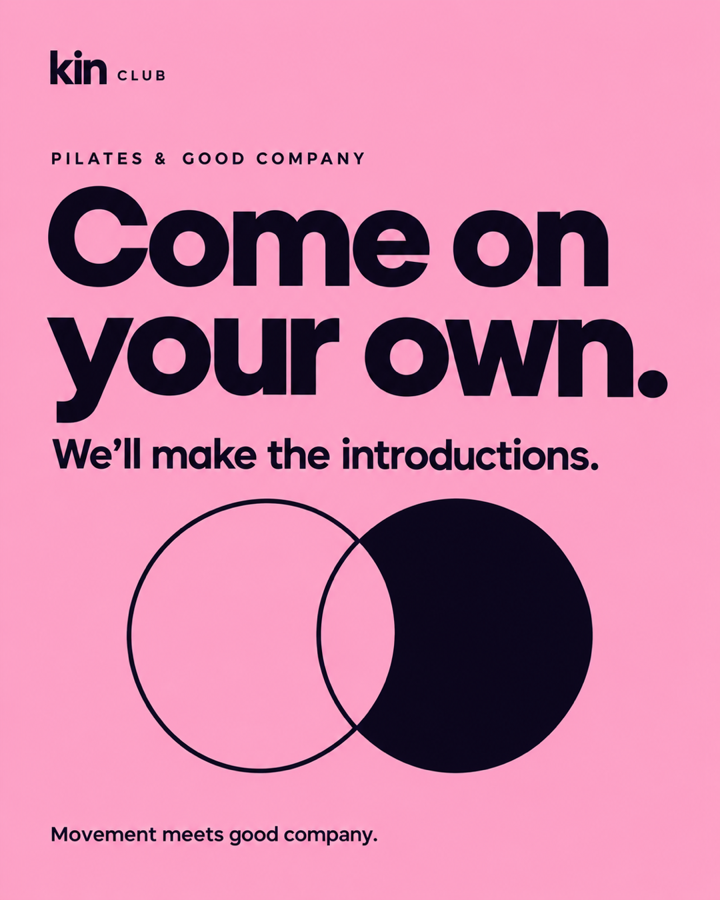
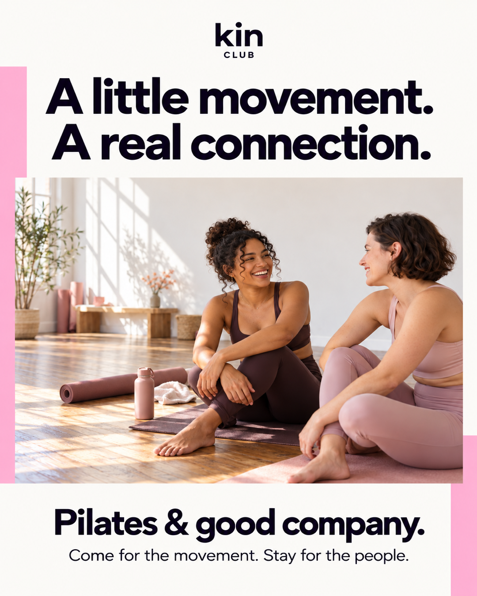
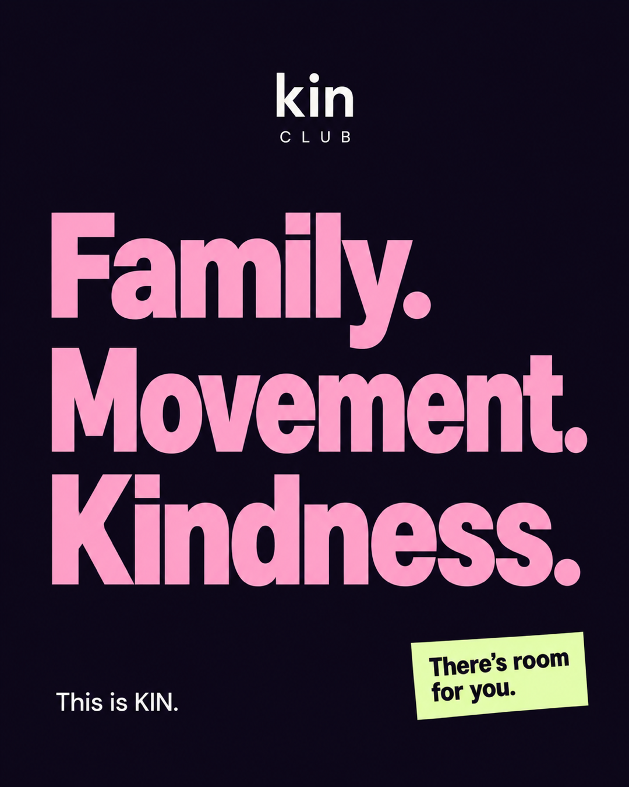
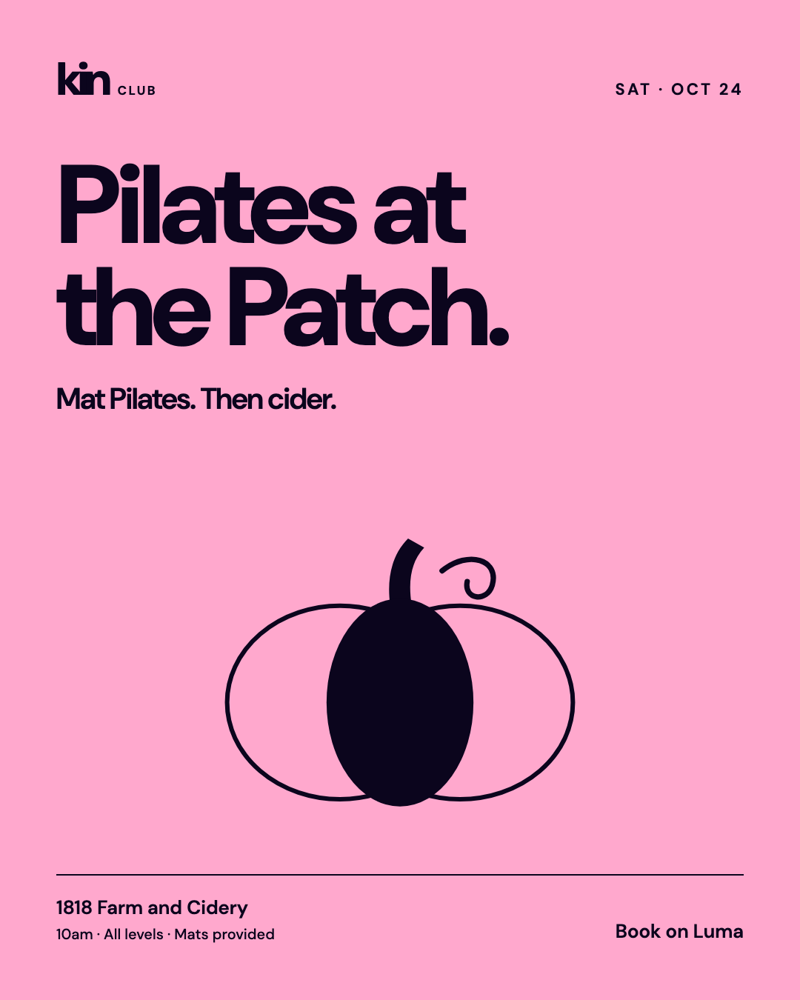
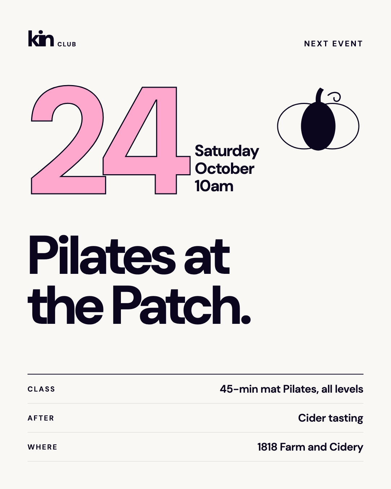
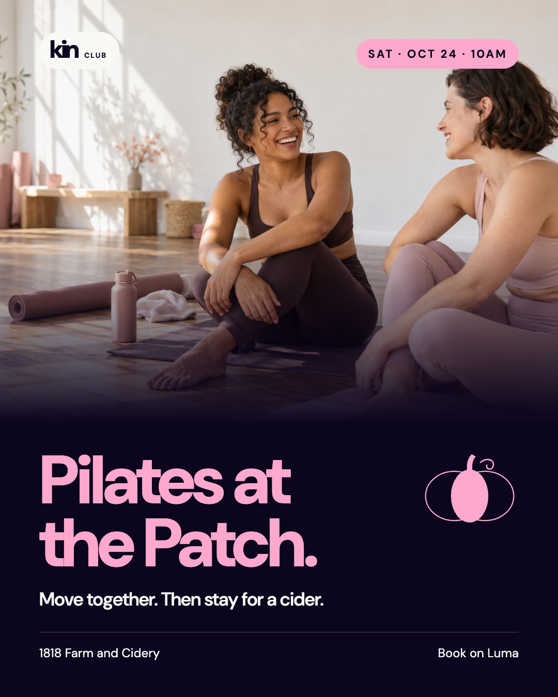
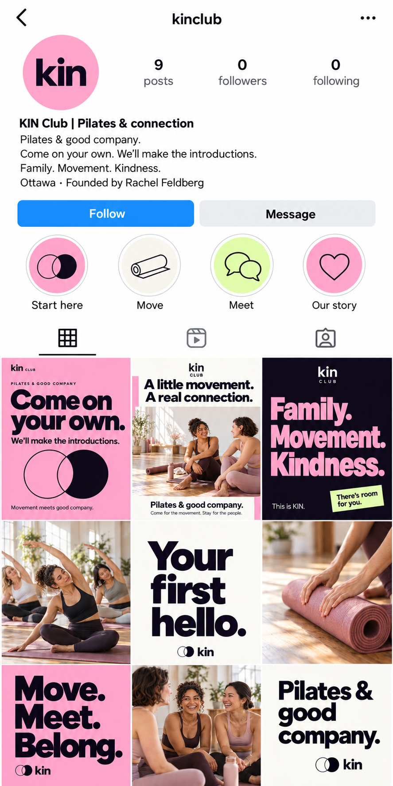

The clearest expression of KIN’s welcome.
Download poster

People and conversation bring the idea to life.
Download poster

The green is a small accent, not the identity.
Download poster
The first version. Dark and bold, with all the event details on the poster.
Download poster

Matches the first campaign poster. Big pumpkin, fewest words, built to stop the scroll.
Download poster

Leads with the date, so it works as a save-the-date and a reminder post.
Download poster

Leads with people, not graphics. Swap in a real photo from the farm or a pilot class before posting.
Download posterThe profile concept
A club.
Not a wall of ads.
The three campaign posters anchor the first row. Movement, conversations, and quieter brand posts fill out the nine-post grid.
The profile includes a pink KIN avatar, four highlight covers, a short bio, and the complete 3 × 3 feed.
Download profile mockup
The proposed bio
Pilates & good company.
Come on your own. We’ll make the introductions.
Family. Movement. Kindness.
Ottawa · Founded by Rachel Feldberg
This is a visual concept. The handle and account counts are placeholders. All people shown are illustrative, not Rachel or past KIN guests. The page has not been created or posted to Instagram.
